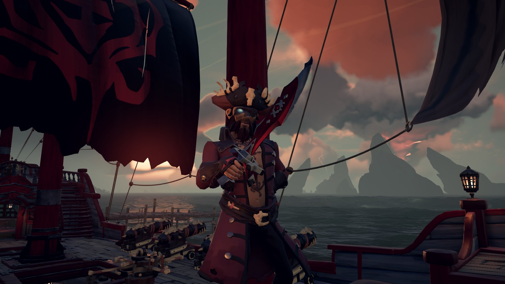

Heramyle Rouge
Heramy le Rouge est un pirate parfois trop empathique et compatissant. En effet il lui arrive d'avoir du mal à attaquer de jeunes marins innocents. Heureusement pour remédier à celà, il a mis en place un jeu de pile ou face pour savoir s'ils méritaient de vivre ou non.
Heramy a de nombreux compagnons, qui vont et viennent, et avec lesquels il a vécu de nombreuses aventures.